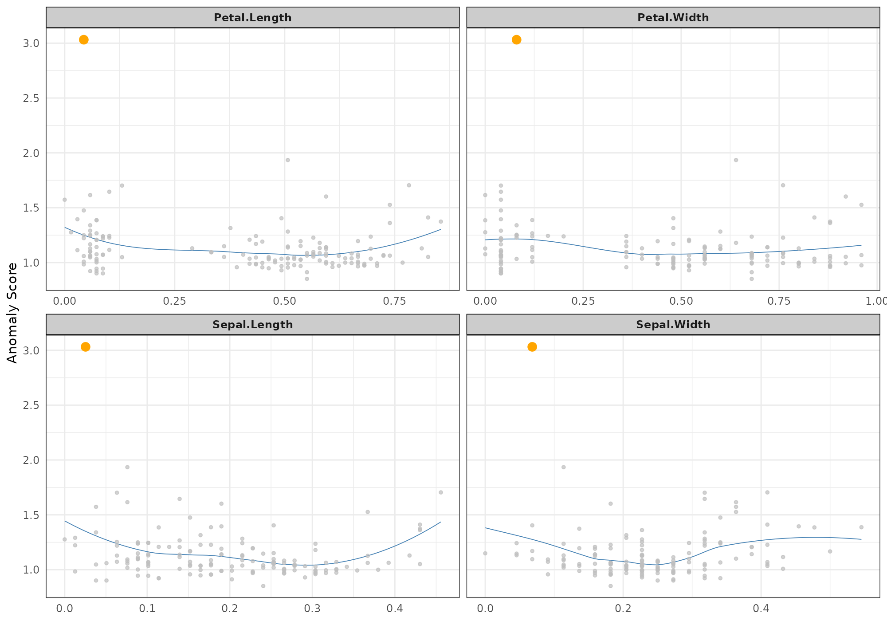

For some metrics, litterature recommends some cutpoints (2 for lof for instance).
There is a way to derive anomalies from this given cutpoint by filtering a stranger or a singularize object and convert to anomalies the set of retained records.
Filtering can be done either with usual [ or dplyr select.
Assumed dbscan package is installed, one can for instance use lof weird, use 2 as cutpoint and derive an anomaly object with as.anomalies.
iris %>% select(-Species) %>%
crazyfy() %>%
strange(weird="lof") %>%
singularize() -> s## Loading required package: dbscananom <- filter(s,lof_k_10>2) %>% as.anomalies()NOTE our current implementation of select is not pipeable; we are still trying to ingest Hadley Wickham litterature on programming with dyplyr…
Anomaly objects are simple vectors with attributes; once can then access the first anomaly and display it with:
plot(s,type="neighbours", score="lof_k_10",anomaly_id=anom[1])## Your data has been converted to a dataframe to be compatible with ggplot function.## Loading required package: FNN
stranger package is a wrapper around several methods. Problem thus arrives on the choice of the method… We will see later in this vignette how to work with several metrics and in particular the stacking.
But world is really complex and even for one chosen method, leyt say knn weird, user has to pick some parameters…
Here comes the parameter tuneGrid (name borrowed from caret) that allow to use one weird with different sets of parameters in the same call.
Let’s prepare a matrix of parameters:
tg <- expand.grid(k=c(5,10,20),simplify=c("mean","median"),stringsAsFactors=FALSE)
tg## k simplify
## 1 5 mean
## 2 10 mean
## 3 20 mean
## 4 5 median
## 5 10 median
## 6 20 medianWe thus have 6 possible combinations
## .id knn_k_5_mean knn_k_10_mean knn_k_20_mean knn_k_5_median
## 1: 1 0.02560115 0.03647553 0.05368046 0.02601460
## 2: 2 0.03628835 0.04448610 0.06322990 0.03894765
## 3: 3 0.03605785 0.04354593 0.05611057 0.03894765
## 4: 4 0.03256554 0.04072704 0.05649871 0.02977918
## 5: 5 0.03984542 0.04519420 0.05902922 0.04195510
## ---
## 146: 146 0.07056222 0.08621572 0.11121305 0.07400789
## 147: 147 0.07533194 0.10077827 0.12428750 0.07925859
## 148: 148 0.07167463 0.08622770 0.10228438 0.07429926
## 149: 149 0.08643839 0.10152256 0.12754738 0.10533133
## 150: 150 0.06003996 0.07692173 0.10060785 0.06290052
## knn_k_10_median knn_k_20_median
## 1: 0.03488959 0.05278479
## 2: 0.04426191 0.05939418
## 3: 0.04408645 0.05960504
## 4: 0.04182115 0.05447469
## 5: 0.04771224 0.05636842
## ---
## 146: 0.09178279 0.11484551
## 147: 0.10273185 0.13174353
## 148: 0.08791375 0.10983492
## 149: 0.11319301 0.12104827
## 150: 0.08442104 0.10450279NOTES
stranger naming conventions do not necessary involve all parameters, we though ensure unique names and store parameters values as attributes (metadata) for every metric.stranger.tg = data.frame(k=c(5,5:8))
(anoms <- iris %>% select(-Species) %>%
crazyfy() %>% strange(weird="knn",tuneGrid=tg,algorithm=c("cover_tree")))## .id knn_k_5_mean knn_k_5_mean.1 knn_k_6_mean knn_k_7_mean
## 1: 1 0.02560115 0.02560115 0.02800096 0.03034193
## 2: 2 0.03628835 0.03628835 0.03800174 0.03946357
## 3: 3 0.03605785 0.03605785 0.03749732 0.03879323
## 4: 4 0.03256555 0.03256555 0.03458706 0.03603100
## 5: 5 0.03984543 0.03984543 0.04115709 0.04216815
## ---
## 146: 146 0.07056224 0.07056224 0.07412305 0.07668065
## 147: 147 0.07533194 0.07533194 0.08271409 0.08860528
## 148: 148 0.07167465 0.07167465 0.07490411 0.07773136
## 149: 149 0.08643838 0.08643838 0.09089748 0.09425377
## 150: 150 0.06003996 0.06003996 0.06483095 0.06838887
## knn_k_8_mean
## 1: 0.03244721
## 2: 0.04128187
## 3: 0.04027742
## 4: 0.03734822
## 5: 0.04306710
## ---
## 146: 0.07947144
## 147: 0.09333819
## 148: 0.08103779
## 149: 0.09678463
## 150: 0.07124970(meta <- get_info(anoms))## weird_method name package package.source
## knn_k_5_mean "k-Nearest Neighbour" "knn" "FNN" "CRAN"
## knn_k_5_mean.1 "k-Nearest Neighbour" "knn" "FNN" "CRAN"
## knn_k_6_mean "k-Nearest Neighbour" "knn" "FNN" "CRAN"
## knn_k_7_mean "k-Nearest Neighbour" "knn" "FNN" "CRAN"
## knn_k_8_mean "k-Nearest Neighbour" "knn" "FNN" "CRAN"
## foo type sort
## knn_k_5_mean "knn.dist" "distance" -1
## knn_k_5_mean.1 "knn.dist" "distance" -1
## knn_k_6_mean "knn.dist" "distance" -1
## knn_k_7_mean "knn.dist" "distance" -1
## knn_k_8_mean "knn.dist" "distance" -1
## detail parameters
## knn_k_5_mean "Positive numeric value (distance)" List,3
## knn_k_5_mean.1 "Positive numeric value (distance)" List,3
## knn_k_6_mean "Positive numeric value (distance)" List,3
## knn_k_7_mean "Positive numeric value (distance)" List,3
## knn_k_8_mean "Positive numeric value (distance)" List,3
## normalizationFunction colname
## knn_k_5_mean ? "knn_k_5_mean"
## knn_k_5_mean.1 ? "knn_k_5_mean"
## knn_k_6_mean ? "knn_k_6_mean"
## knn_k_7_mean ? "knn_k_7_mean"
## knn_k_8_mean ? "knn_k_8_mean"meta[,"parameters"]## $knn_k_5_mean
## $knn_k_5_mean$k
## [1] 5
##
## $knn_k_5_mean$algorithm
## [1] "cover_tree"
##
## $knn_k_5_mean$simplify
## [1] "mean"
##
##
## $knn_k_5_mean.1
## $knn_k_5_mean.1$k
## [1] 5
##
## $knn_k_5_mean.1$algorithm
## [1] "cover_tree"
##
## $knn_k_5_mean.1$simplify
## [1] "mean"
##
##
## $knn_k_6_mean
## $knn_k_6_mean$k
## [1] 6
##
## $knn_k_6_mean$algorithm
## [1] "cover_tree"
##
## $knn_k_6_mean$simplify
## [1] "mean"
##
##
## $knn_k_7_mean
## $knn_k_7_mean$k
## [1] 7
##
## $knn_k_7_mean$algorithm
## [1] "cover_tree"
##
## $knn_k_7_mean$simplify
## [1] "mean"
##
##
## $knn_k_8_mean
## $knn_k_8_mean$k
## [1] 8
##
## $knn_k_8_mean$algorithm
## [1] "cover_tree"
##
## $knn_k_8_mean$simplify
## [1] "mean"So you have decided to go for and try two different methods. Let say knn and autoencode.
First, we can create two object containg assciatdd metrics.
data <- iris %>% select(-Species) %>% crazyfy()
m1 <- strange(data, weird="knn")
m2 <- strange(data, weird="autoencode")## Loading required package: autoencoder## autoencoding...
## Optimizer counts:
## function gradient
## 191 53
## Optimizer: successful convergence.
## Optimizer: convergence = 0, message =
## J.init = 41.81893, J.final = 0.3689983, mean(rho.hat.final) = 0.001385937For convenience and further exploitation, a merge method is at your disposal to gather the two corresponding metrics in a single object:
(metrics <- merge(m1,m2))## .id knn_k_10_mean autoencode_nl_3_Nhidden_10
## 1: 1 0.03647553 0.06989930
## 2: 2 0.04448610 0.06869046
## 3: 3 0.04354593 0.07304249
## 4: 4 0.04072704 0.06892880
## 5: 5 0.04519420 0.07180840
## ---
## 146: 146 0.08621572 0.05846855
## 147: 147 0.10077827 0.03393882
## 148: 148 0.08622770 0.03886931
## 149: 149 0.10152256 0.05923877
## 150: 150 0.07692173 0.02544889You are not sure yet about the metric you want to use. Or you would like to test many, with plenty of different values for the parameters? stranger is for you. This function is similar to caretList in caretEnsemble package.
With its first parameter methodList you can supply many methods that will be invoked with their default parameter.
If you want to use your own values or use a tuneGrid for a given method, you will have to create weird objects using weird function and pass a list of such weirds object to the parameter tuneList.
Following call will for instance: * fit a knn weird with default values (taken from methodList) * fit a autoencode weird with default values * also fit a knn but with k set to 20 (not recommended for iris data having 50 observations)
## autoencoding...
## Optimizer counts:
## function gradient
## 94 42
## Optimizer: successful convergence.
## Optimizer: convergence = 0, message =
## J.init = 41.81809, J.final = 0.36859, mean(rho.hat.final) = 0.001219024ss=stranger(data, methodList=c(“lof”), tuneList=list( weird(method=“knn”, tuneGrid=data.frame(k=c(3,5,10,15))) , weird(method=“autoencode”,colname=“auto_2hidden”,nl=4,N.hidden=c(6,15)) , weird(method=“autoencode”, colname=“auto”, tuneGrid=data.frame(nl=3,N.hidden=c(6,15,30)))))
anom <- ss %>% singularize() %>% get_anomalies(nmin=6,nmax=6)
anom %>% fortify(data=iris,colname=“anomaly”) %>% ggplot(aes(x=Sepal.Length,y=Sepal.Width,color=Species,size=anomaly))+geom_point()+scale_size_discrete(range=c(1,3))